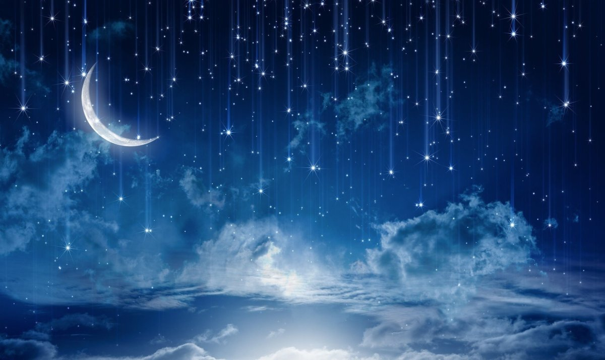
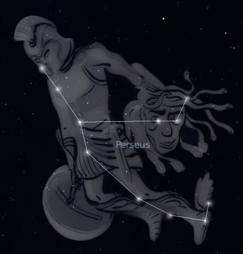
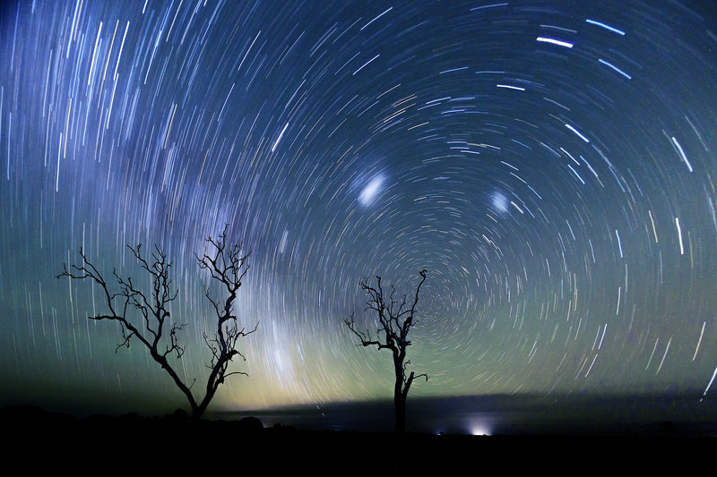
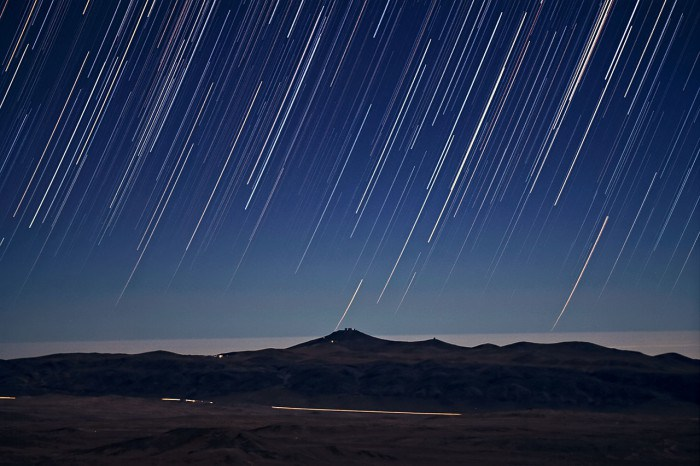

in fiecare an, incepand cu 17 iulie si pana pe 24 august, Pamantul trece prin calea orbitala a cometei Swift-Tuttle, “parintele” Perseidelor. Resturi din coada cometei ajung in atmosfera superioara a Pamantului cu viteza de 210 000 km pe ora, luminand cerul in timp ce ard. De aici si denumirea de “ploaie de stele”.
Radiantul, adica punctul aparent din care par sa vina Perseidele, se gaseste in constelatia Perseu, in apropiere de celebrul Roi Dublu. Prin urmare, ploaia de meteori este numita in onoarea constelatiei Perseu.

Consteltia Perseu E bine de stiut ca aceasta este doar o aliniere intamplatoare a radiantului ploii de meteori cu constelatia Perseu. Stelele din constelatie se afla la ani lumina distanta, in timp ce acesti meteoroizi ard la aproximativ 100 km deasupra suprafetei Pamantului. Daca un meteoroid supravietuieste arderii si ajunge la sol intact, atunci portiunea din el ramasa se numeste meteorit. Putini meteoroizi din ploile de meteori devin meteoriti, datorita naturii subtiri a deseurilor lasate de cometa.

Spectacolul cerului Cu toate ca numarul lor este greu de anticipat, pentru ca avem parte in aceasta perioada de nopti intunecate, ne putem astepta sa vedem cel putin unul la cateva minute. Meteorii apar ca dungi trecatoare de lumina cu durata mai mica de o secunda, dar cele mai stralucitoare lasa in urma trasee de gaze vaporizate si molecule de aer, care pot dura cateva secunde pana sa se estompeze. in 2015, curentul anual de Perseide va oferi un adevarat spectacol in orele de dinaintea zorilor din zilele de 11, 12, 13 si 14 august. Cum semiluna in scadere apare pe cer cu putin inainte de rasaritul Soarelui, aceasta nu va sta in calea pasionatilor de astronomie sau a curiosilor care isi doresc sa ia parte la sesiuni de observatii astronomice si sa vada pana la 100 de meteori pe ora la maximul de intensitate al curentului, in noaptea dinspre 12 spre 13 august.

Meteorit vs asteroid Stelele cazatoare se numesc “meteori” si reprezinta, de fapt, darele luminoase care se vad uneori noaptea pe cer si sunt produse de “meteoroizi”, obiecte cosmice care intra in atmosfera terestra. Ca dimensiune, un meteoroid este mai mic decat un asteroid, iar daca obiectul supravietuieste frecarii cu aerul, va cadea pe sol, caz in care se numeste “meteorit”. Cei mai multi meteoroizi care intra in atmosfera Pamantului, insa, sunt atat de mici incat se pot vaporiza complet si nu ajung niciodata la suprafata planetei.
